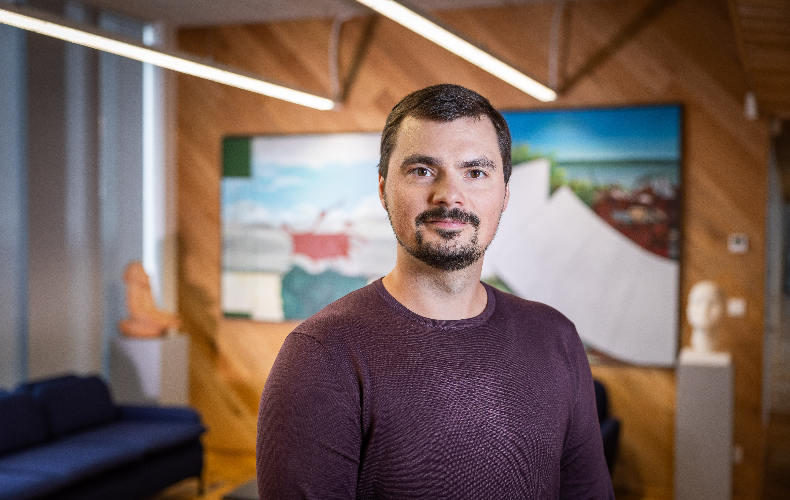

Raigo Häelme

Summary
I am a hardworking and dedicated individual with experience in IT product and project management
Education
- University of Tartu / 2010 - 2015 / Bachelor's degree, Sports management & Physical culture
- Tartu Kivilinna Gümnaasium / 2007 - 2010 / Grade: High school
- Tartu Kivilinna Gümnaasium / 1999 - 2007 / Grade: Elementary
Experience
Project Manager
Kodally Full-time
Mar 2023 - Present 1 yr 7 mos
Project Manager
Mooncascade Full-time
Aug 2020 - Jan 2023 2 yrs 6 mos
During my time in Mooncascade, I did 8 projects, industries from Saas, Gambling, Fintech, Communication, etc.
As a project manager, I’m responsible for running development team and delivering the project.
- Analysis
- Running scrum and managing the backlog
- Aligning roadmap, scope and requirements with the client
- Managing documentation
- Budgeting and reporting
- Planning resources
- Estimating the development
- Risk management
- Coordinating releases
- Managing the team
Product Owner
Gymwolf OÜ · Part-time
Mar 2020 - Aug 2020 6 mos
Grown out of Mooncascade as an inside project, made into a separate company.
Gymwolf is a workout tracking tool: Add workouts, create your own workout plans or accomplish your goals with motivation from a personal trainer and committed training.
- Communication and marketing
- Running scrum and managing the backlog
- User research and usability testing
- Managing documentation
- Budgeting and reporting
- Defined product strategy and user journey
- Estimating the development
- Risk management
- Coordinating releases
- Managing the team
Gymwolf Product Owner
Mooncascade Full-time
Jul 2019 - Feb 2020 8 mos
Gymwolf is an in-house project.
- Communication and marketing
- Running scrum and managing the backlog
- User research and usability testing
- Managing documentation
- Budgeting and reporting
- Defined product strategy and user journey
- Estimating the development
- Risk management
- Coordinating releases
- Managing the team
University of Tartu Academic Sports Club
1 yr 11 mos
Tartu, Estonia
Director Of Basketball
Jun 2018 - Jun 2019 1 yr 1 mos
- Division day-to-day life organization
- Meeting organization
- Finding sponsors
- Sponsors advertisement
- Budgeting and reporting
- Communication with sponsors
- Sales
- Representing the team
Marketing Manager
Estonian Basketball Association
Mar 2016 - Sep 2017 1 yr 7 mos
- Sponsor communication
- Finding sponsors
- Responsible for league marketing
- Social media administration
- Television and internet broadcast supervisor
- Making and administrating the marketing and communication plan
- Making and ordering advertisements
- Representing the team
Team Manager ; Marketing Manager
MTÜ SK DUO
Sep 2013 - Mar 2015 1 yr 7 mos
Tartu
- Team day-to-day life organization
- Sponsors advertisement
- Communication with sponsors
- Social media administration
- Team advertisement
- Home game organization
- Making and ordering advertisements
- Facebook and webpage management
Project Manager
MTÜ Tartu Ülikooli Akadeemiline Spordiklubi
Dec 2012 - Aug 2013 9 mos
Tartu
- Event organizing
- Budget management
- Communication with sponsors
- Finding sponsors
- Recruiting volunteers
Skills
- Project Management
- Product Management
- Scrum
- Process Improvement
- Marketing
- Digital Marketing
Certifications
- About programming - python (MTAT.TK006) / University of Tartu / 2022
- FIBA Communication and Marketing workshop / FIBA / 2017
- General subjects of coach training, assistant coach, EKR level 3 / University of Tartu / 2013
- Swimming coach course
Other